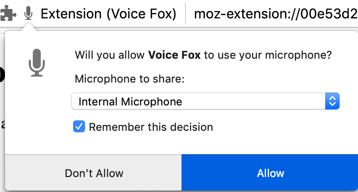

Welcome to Firefox Voice
Search, open a webpage, find a tab, play music, mute audio, and more with just your voice.
Privacy is our promise.
The mic is only active when you trigger it with a button press or hot key.
After processing your voice isn't stored on any servers.
How Mozilla protects your voice data
To get started with Firefox Voice, you have to allow microphone access and check "Remember my choice".
You must allow microphone permission to use Firefox Voice.
First click on in the URL bar.
Next remove the permission denial:

After that
There was an error trying to get microphone access:
If you want to change which microphone you use, you can revisit this page, remove the permission (click ) and then give permission with a new microphone.
-
Start by clicking the mic
Or try using the keyboard shortcut
+. -
Speak when you see the line
-
Try saying things like:
Go to the New York Times
Search for hiking in Denver
Find my calendar tab
Show me 49ers scores on ESPN
Play Green Day on YouTube